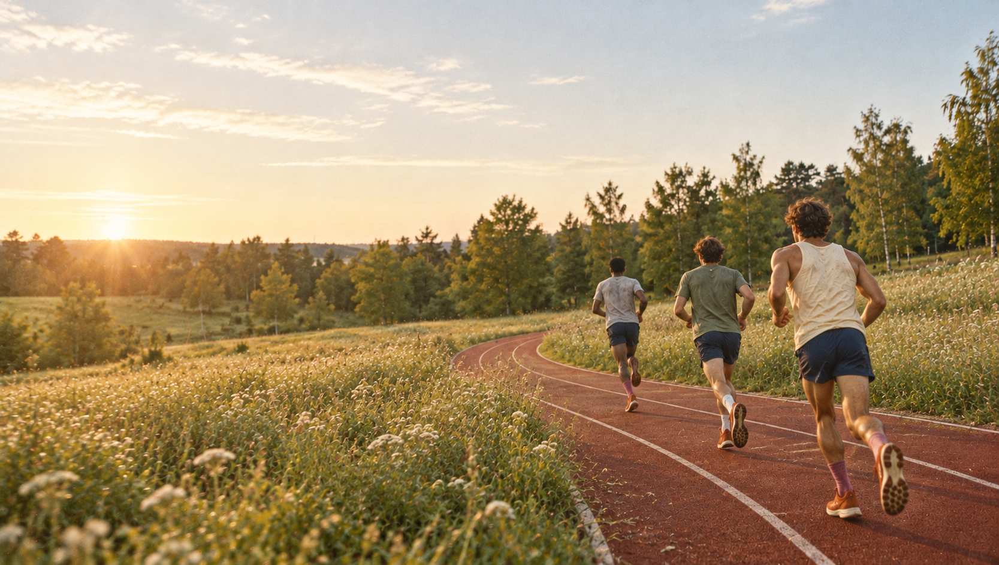
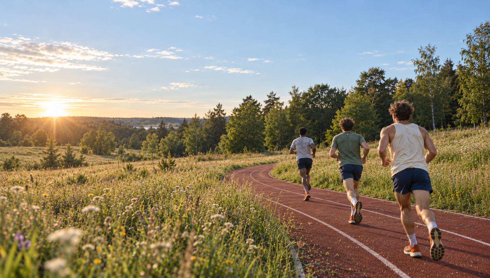
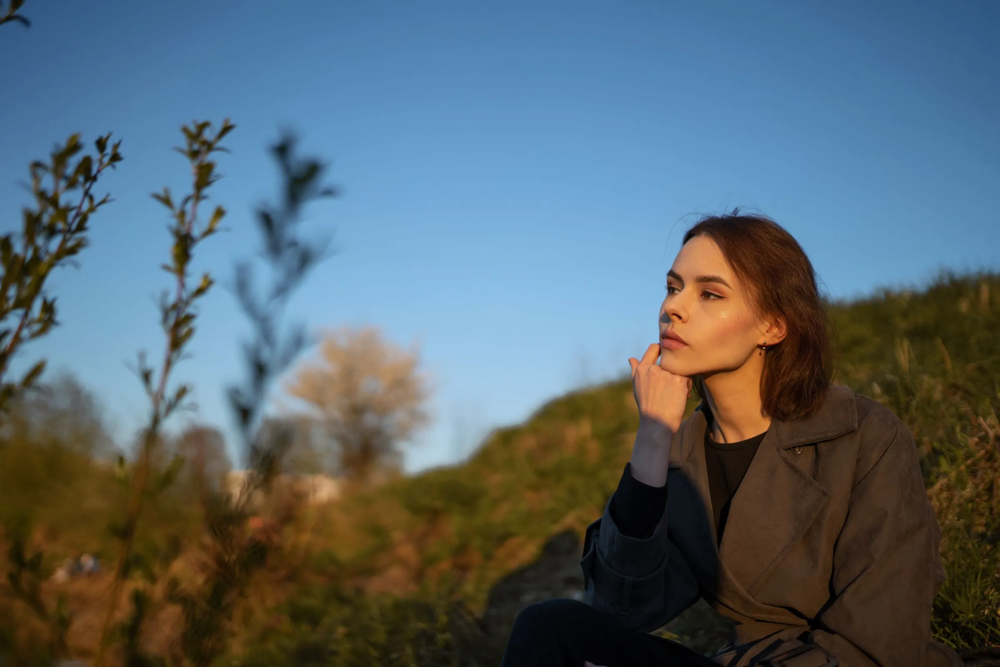

Original Meadow lane
Full image

This image could not load. Open the original image directly.
The existing scene, preserved as it is. AI-generated artwork.
View the original websiteKeep the runners, morning light and open field. Look more closely at the skin, hair, grass and trees that make the scene feel natural.

This image could not load. Open the original image directly.
The existing scene, preserved as it is. AI-generated artwork.
View the original website
This image could not load. Open the revised image directly.
More varied vegetation, calmer fabric and clearer depth. This version is still AI-generated; the nearest runner’s hair and skin retain some polish.
View the revised websiteKept too much of the original’s synthetic texture.
Softer skin, but the track texture became more artificial. The second reconstruction above is the stronger overall image.

Visual reference. How this image was made has not been verified.